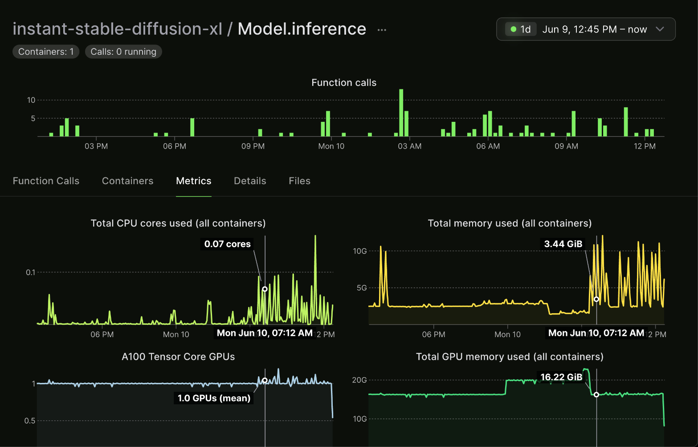
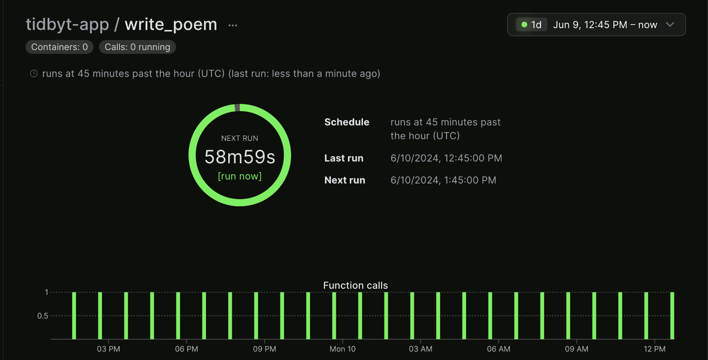
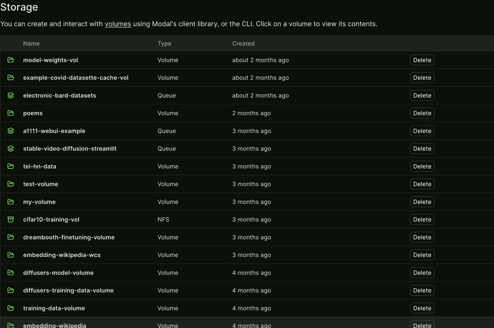
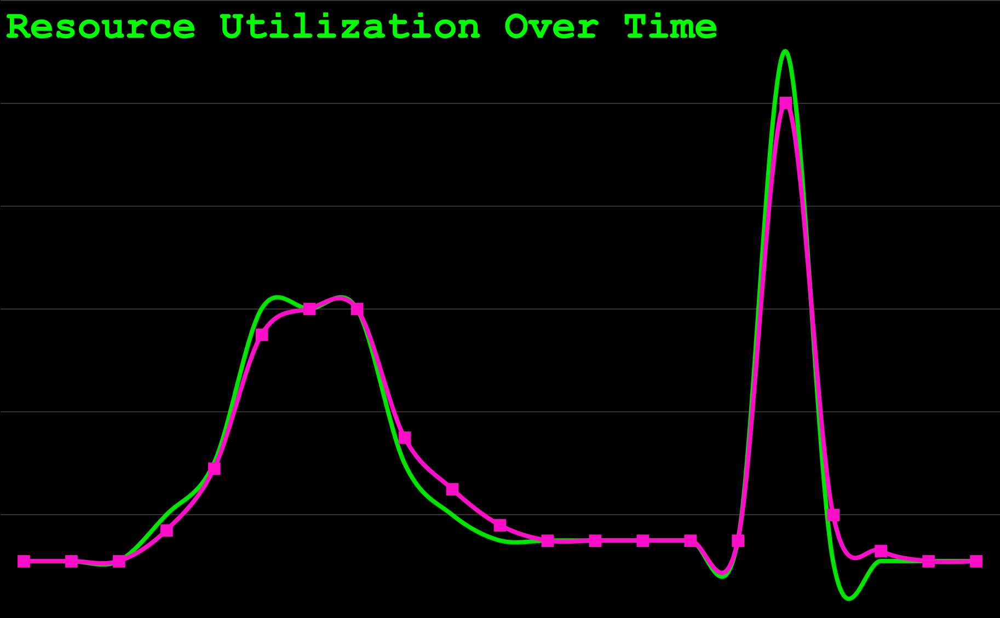

Conference Talk 15: Modal - Simple Scalable Serverless Services
notes
llms
In this talk, Charles Frye provides a deeper dive into Modal, exploring its capabilities beyond fine-tuning LLMs and demonstrating how it empowers users to build and deploy scalable, cost-efficient, and serverless applications with simplicity using Python.
This post is part of the following series:
- Mastering LLMs Course Notes: My notes from the course Mastering LLMs: A Conference For Developers & Data Scientists by Hamel Husain and Dan Becker.
Introduction
- Speaker: Charles (@charles_irl on Twitter)
- Topic: A deeper dive into Modal, focusing on its broader applications beyond fine-tuning LLMs.
- Slides: Simple Scalable Serverless Services
Modal Overview
Modal Vision: Scalable, Cost-Efficient, Serverless Services
- Modal’s vision is to enable the deployment of scalable services that are cost-efficient and serverless, all while being simple and easy to use.
Defining “Scalable Services”
Three Key Service Requirements: Input/Output, Storage, Compute
- Input/Output: Connecting the service to the outside world and its information.
- This enables services to receive input and provide output over networks, unlike isolated scripts or notebooks.
- Storage: Preserving information for later use.
- Databases and file storage are crucial for storing and retrieving data within the service.
- Compute: Manipulating and processing information.
- Even simple storage solutions benefit from compute capabilities for efficient access and retrieval.
Scalability as Table Stakes
- Modern services are expected to scale to handle:
- Global user bases accessing services concurrently.
- Massive data storage needs, potentially reaching petabytes or more.
- Computationally intensive tasks distributed across multiple machines.
Challenges and Importance of Scalability
- Failing to scale can lead to:
- Service outages when traffic surges.
- Poor user experiences due to slow response times.
Distributed Systems for Scalability
- Scalability is typically achieved through distributed systems, spreading the workload across numerous machines and data centers.
- However, building and managing distributed systems is complex and challenging.
Modal’s Solution: Simple Scalable Services with Python
- Modal aims to simplify the creation of scalable services using Python.
Pythonic Tools for Building Services
- Web Endpoints and Servers: Easily define web endpoints and servers that scale without complex configurations.
- Modal handles the complexities of distribution and scaling, requiring minimal configuration from the developer.
- Storage Options:
- Caching and Distributed Storage: Modal provides distributed dictionaries and queues for efficient inter-process communication in scaled environments.
- Volumes: Abstract away the complexities of distributed file systems, offering a local file system interface for storing data like weights and datasets.
- Compute with Python Functions: Python functions serve as the fundamental units of work in Modal.
- Define functions that execute upon endpoint requests or as cron jobs.
Modal Dashboard Overview
Model Inference Function Example
- Modal’s dashboard visualizes resource usage for running functions.
- Example: A model inference function triggered by user requests, scaling resources like CPU, memory, and GPU usage based on demand.

Scaling Up and Down Resources
- Modal dynamically adjusts resource allocation based on real-time needs, ensuring optimal performance and cost efficiency.
Handling Multiple Inputs
- Functions can be designed to handle multiple inputs concurrently, maximizing resource utilization.
Cron Jobs with Modal
- Schedule periodic function execution for tasks like:
- Regularly displaying generated content.
- Pulling data from production databases to data warehouses.
- Performing regular data analysis.
- Fine-tuning and retraining models on a cadence.
- Rerunning evaluations with live user data.

Q&A Session 1
Database Service Availability
- Modal does not currently offer a managed database service, particularly serverless Postgres.
Challenges of Serverless Postgres
- Two main types of databases:
- OLTP (Online Transaction Processing): Difficult to scale due to row-level operations and complex joins.
- OLAP (Online Analytical Processing): More straightforward to run on Modal using examples with tools like DuckDB and parquet files stored in S3.
Running Analytical Workloads on Modal
- Modal provides examples for running analytical workloads:
- Downloading parquet files from S3.
- Performing analysis using tools like DuckDB.
Challenges of Scaling Transaction Processing
- Distributed transaction processing databases are more challenging to build and scale effectively.
Recommendations for Serverless Postgres: Neon, Superbase
Storage in Modal
Importance of Data Storage
- Data storage is paramount, often defining the value of applications.
Focus on Long-Term Storage
- This section emphasizes long-term storage solutions rather than in-memory dictionaries and queues.
File System Abstractions: Volumes
Use Cases: Storing Weights, Datasets
- Volumes provide a distributed file system abstraction, ideal for storing:
- Model weights.
- Datasets, including large ones (terabyte-scale or even low petabyte-scale).

Examples of Stored Volumes
- Model weights from Axolotl fine-tuning runs.
- CIFAR-10 data and models.
- Raw Wikipedia dataset from Hugging Face Datasets in Arrow file format.
Handling Large Datasets
- Modal offers examples for storing and working with very large datasets on the order of terabytes or even low petabytes.
Volumes: Optimized for Write Once, Read Many Workloads
- Modal’s volumes are designed for workloads where data is written infrequently but read frequently.
- This design choice optimizes for:
- Datasets that are not frequently overwritten.
- Model weights where new versions are written, but existing versions are not modified.
Explanation of Write Once, Read Many
- Data is written once and then read many times, common for datasets and model weights.
Benefits for Scaling
- Scaling read operations is significantly easier than scaling write operations, making volumes well-suited for read-heavy workloads.
Q&A Session 2
Storage Pricing
- While Modal does not currently charge for storage, it plans to implement pricing eventually.
- The goal is to price storage at a rate comparable to S3, Modal’s underlying storage provider.
Input and Output in Modal
FastAPI Integration
Benefits of Using FastAPI with Modal
- Asynchronous Python: FastAPI enables asynchronous programming without the complexities of manually managing asynchronous operations.
- Documentation: FastAPI provides excellent documentation.
- Scalability: Asynchronous programming in FastAPI aligns well with Modal’s scaling capabilities.
- Performance: Asynchronous operations can improve performance, especially with Modal’s distributed architecture.
Asynchronous Python, Documentation, Scalability, Performance
- FastAPI simplifies asynchronous programming and offers performance benefits when used with Modal.
Modal’s Handling of Synchronous and Asynchronous Functions
- Modal seamlessly handles both synchronous and asynchronous functions, avoiding common errors associated with mixing the two.
Flexibility and Performance with Async
- Developers can gradually introduce asynchronous code into their Modal projects without major refactoring.
Web Endpoints for Exposing Services
- FastAPI, based on the ASGI protocol, offers a robust way to define and expose web services.
FastAPI as a Dependency
- FastAPI is a dependency of Modal, simplifying project setup and dependency management.
Creating URLs from Python Functions
- Modal can automatically create URLs from Python functions, simplifying web service creation.
Asynchronous Server Gateway Interface (ASGI)
Flexibility Beyond FastAPI
- Modal supports any ASGI-compliant web framework, providing flexibility beyond FastAPI.
WSGI and Flask Support
Comparison of WSGI and ASGI
- Modal also supports WSGI (Web Server Gateway Interface), an older protocol commonly used with frameworks like Flask.
- While WSGI offers a mature ecosystem, it lacks native asynchronous support, potentially impacting performance compared to ASGI.
Potential Trade-offs with WSGI
- WSGI may provide a wider range of existing projects and libraries but might lack the performance advantages of ASGI.
Running Arbitrary Web Servers
- Modal allows running arbitrary web servers, even those not written in Python, by treating them as subprocesses.
Q&A Session 3
DDoS Attack Prevention
- Modal does not currently have built-in DDoS protection but acknowledges its importance and plans to offer it in the future.
Current Mitigation Strategies
- Developers can implement authentication middleware in FastAPI or Flask to restrict access.
Importance of Authentication and Rate Limiting
- Authentication and rate limiting are crucial for preventing unauthorized access and mitigating DDoS attacks.
Potential for Cloudflare DDoS Protection
- Integrating with services like Cloudflare for DDoS protection is worth exploring.
WebSockets and Max Execution Time
- For questions related to WebSockets and maximum execution time, Modal recommends reaching out on their Slack channel for more specific guidance.
Clarification on Django’s Async Support
- A participant clarifies that Django supports asynchronous views and requests when running under ASGI.
Serverless Nature of Modal
Importance of Serverless Architecture
- Serverless architecture is a key aspect of Modal, contributing to its cost-efficiency and developer experience.
Serverless for Cost Efficiency and Developer Experience
- Modal’s serverless nature offers both financial and ergonomic benefits for development teams.
Variable Resource Utilization
- Service resource usage fluctuates over time due to factors like:
- Time zone-dependent usage patterns.
- Traffic spikes from external events.
Provisioning for Peaks and Cost Implications
- Traditional approaches involve provisioning resources for peak usage, leading to wasted resources and unnecessary costs during off-peak times.
Resource Utilization Challenges
- Optimizing resource utilization becomes crucial to minimize costs, as exemplified by Amazon’s journey into cloud computing.
The Rise of Cloud Computing
- Cloud computing emerged partly from the need to utilize idle resources effectively.
Manual Provisioning and Its Drawbacks
- Manually scaling resources up and down can reduce costs but is reactive, stressful, and may not handle sudden traffic spikes well.
Handling Traffic Spikes
- Manual provisioning struggles to respond quickly to unexpected surges in traffic.
Reducing Costs but Potentially Sacrificing User Experience
- While manual provisioning can save costs, it can also lead to poor user experiences during scaling events.
Automatic Provisioning and Autoscaling

Kubernetes and Autoscaling
- Tools like Kubernetes automate provisioning and scaling, dynamically adjusting resources based on demand.
Lag in Autoscaling
- Autoscaling typically involves a lag between resource demand and allocation.
Granularity of Autoscaling
- Smaller units of autoscaling allow for more precise resource allocation.
Achieving Serverless: Matching Costs to Resource Utilization
- Serverless computing aims to align costs directly with resource consumption.
Scaling to Zero
- A defining characteristic of serverless is the ability to scale resources down to zero when not in use.
Functions as a Service (FaaS)
- Serverless is often implemented using Functions as a Service (FaaS), where individual functions are executed on demand.
Benefits of Serverless: Cost Savings, Improved User Experience
- Serverless offers:
- Reduced costs by paying only for resources consumed.
- Improved user experiences by dynamically scaling to meet demand.
Why Use a Serverless Platform Like Modal?
- Managing serverless infrastructure requires significant engineering effort.
Why Use a Serverless Platform Like Modal?
- Serverless platforms like Modal offer economies of scale, handling the complexities of:
- Resource allocation.
- Autoscaling.
- Infrastructure management.
Amortizing Engineering Complexity
- Modal amortizes the engineering complexity of serverless across its entire user base.
Smoothing Fluctuations with Multiple Users
- Fluctuations in individual users’ resource usage are smoothed out by the aggregate usage of all users on the platform.
Economics of Serverless Computing
- The “Berkeley View” paper highlights the economic benefits of serverless computing, emphasizing economies of scale and resource utilization.
Berkeley Paper on Serverless
Remote Procedure Calling (RPC) in Modal
RPC as the Core Idea Behind Serverless
- Remote Procedure Calling (RPC) is fundamental to serverless computing and Modal’s functionality.
How RPC Works
- In RPC, local code invokes functions that execute on remote machines, abstracting away the complexities of network communication.
- Book: Computer Networks: A Systems Approach
- Section: 5.3 Remote Procedure Call
Transparency and Seamlessness
- RPC strives for transparency, making remote function calls appear as if they were local.
Modal’s Implementation with gRPC
- Modal utilizes gRPC as its RPC framework.
Understanding Modal’s Behavior
Why Modal Feels Different from Local Python
- Modal’s RPC mechanisms introduce differences compared to traditional local Python execution.
Code Execution on Modal’s Machines
- Code, including functions, is sent to Modal’s infrastructure for execution.
Dynamic Function Execution
- Modal dynamically uploads and executes functions defined in local scripts.
Handling Global Scope and Imports
- Understanding how Modal manages global scope and imports is crucial for writing effective Modal code.
Running Code on GPUs
- Modal enables running code on GPUs even if the local machine lacks them.
Demo: Mini Modal
Simulating Modal Locally
- MiniModal: A simplified local simulation of Modal’s core concepts.
Understanding Modal’s Internals
- Mini Modal provides insights into Modal’s internal workings, particularly its handling of virtual environments and code execution.
Separating Virtual Environments
- Mini Modal demonstrates the isolation of virtual environments, a key aspect of Modal’s functionality.
Q&A Session 4
How Modal Hosts Suno.ai
- Suno.ai, a generative AI application, utilizes various Modal features, including functions, cron jobs, volumes, and web endpoints.
Suno.ai’s Use of Modal’s Features
- A blog post details Suno.ai’s reasons for choosing Modal and how they leverage its features.
Blog Post about Suno.ai’s Choice of Modal
- The blog post provides insights into Suno.ai’s decision to use Modal and their experience with the platform.
About Me:
I’m Christian Mills, a deep learning consultant specializing in practical AI implementations. I help clients leverage cutting-edge AI technologies to solve real-world problems.
Interested in working together? Fill out my Quick AI Project Assessment form or learn more about me.